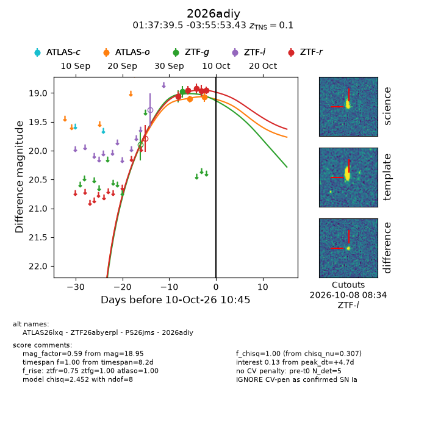
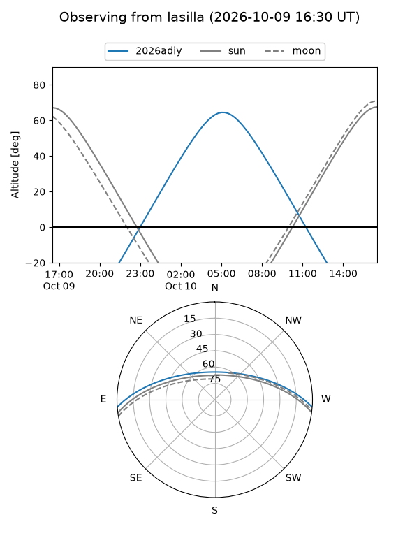
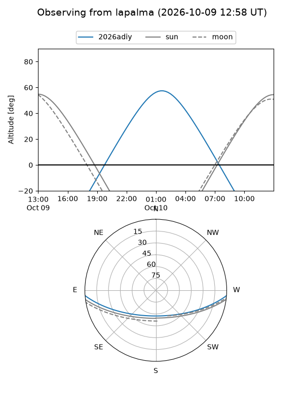
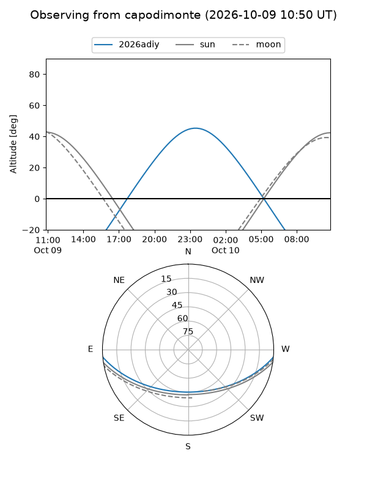
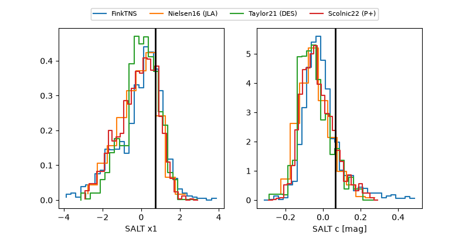

2026adiy
Target 2026adiy at 2026-10-10 10:46
Aliases and brokers:
FINK-ZTF: ztf.fink-portal.org/ZTF26abyerpl
Lasair-ZTF: lasair-ztf.lsst.ac.uk/objects/ZTF26abyerpl
ALeRCE-ZTF: alerce.online/object/ZTF26abyerpl
YSE-PZ: ziggy.ucolick.org/yse/transient_detail/2026adiy
TNS name: wis-tns.org/object/2026adiy
Direct TNS query: direct search
alt names
ZTF26abyerpl (ztf,fink_ztf)
2026adiy (tns,yse)
ATLAS26lxq (atlas)
PS26jms (panstarrs)
Coordinates:
equatorial (ra, dec) = 24.4148,-3.93151
equatorial (HMS+DMS) = 01:37:39.54,-03:55:53.43
galactic (l, b) = (150.3845,-64.31120)
Flags:
TNS type: SN Ia
TNS redshift: 0.1000
peak dt: +4.7
Photometry:
last atlaso=19.07, ztfg=18.98, ztfr=18.95
2 atlaso, 2 ztfg, 5 ztfr detections
Lightcurve

Visibility



Additional plots
